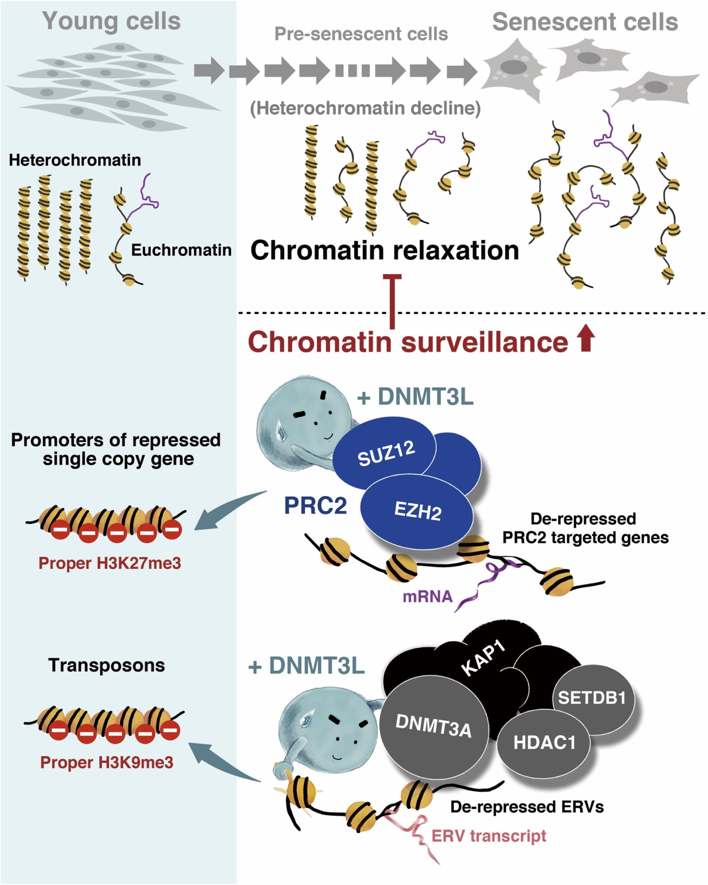

Data Scientist,
Technical Product Manager,
and accidental full-stack developer
I'm Tony and I'm a microbiologist data scientist.
Well, I was a microbiologist in a previous life. Didn't learn anything particularly useful other than that antibiotic soap is bad and immune cells are good.
I hold a Masters degree in Computational Biology (Epigenetics). Very esoteric, right? It turns out analyzing gigabytes of data, finding nuggets of value, and telling insightful stories are highly valuable skills. I'm particularily good at exploratory data analysis and unsupervised learning problems, mainly because most datasets in the academic and corporate worlds are unlabeled and unexplored. These experiences allowed me to develop my ability to translate complex data into business-actionable insights; this talent is the key reason for my success at EY and Indeed.com.
Ever since university, I've loved hackathons that focuses on data. Thinking about problems that are different from my 9-5 helps me gain fresh perspective and learn new techniques. Along the way, I learned full stack web development.
Please feel free to contact me on Linked . No, seriously. For some reason, most people are shy or nervous to reach out. I'm very responsive!


University of British Columbia
09/2015 - 01/2018 (2 years 4 months)
GPA: 92%
Show/hide details
- Invented an automated DNA sequencing protocol for single-cells resulting in 3 new scientific collaborations and contributed to 3 national grant applications being funded
- Automated quality control and analytical pipelines of over 2,000 single-cell datasets (100s of GBs) with bash and R scripts.
- Presented over 40 times at lab and collaborator meetings and at 6 national and international scientific conferences to a mixture of technical and non-technical audiences
University of British Columbia
09/2010 - 04/2014 (4 years)
GPA: 85%
| Date | Award | Organization | Value |
|---|